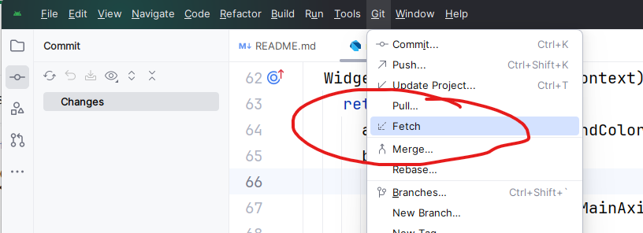
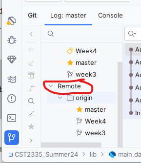

There should be example code that was pushed to the example repository from weeks 2 and 3. To see what branches are available from the repository, select the "Git" menu from Android Studio, and then select "Fetch".

This will connect to the server and see what branches are available on Github. If you want to download commits from a certain branch, then select from the "Remote" computer which branch you want to checkout. For today's lecture, you should checkout the Week4 branch as a starting point for these exercises.

If you get a message that you have unsaved local changes, that just means that you have changes on your computer that haven't been committed and if you checkout other code, you will lose those changes. Git is warning you to commit those changes before continuing. Otherwise if you don't want to save the changes then you must do a Rollback to remove any unsaved chages before you continue.Whenever you want to give a message to the user, normally a window shows up with a short message. It can either be an error message, or something like password doesn't match. Android uses a Snackbar window that shows up at the bottom of the window for a few seconds and then disappears:
const snackBar = SnackBar( content: Text('Yay! A SnackBar!') );
ScaffoldMessenger.of(context).showSnackBar(snackBar);
Let's use last week's code example to add this code to a button onPress handler. If you try the code above, you will see a black message appear at the bottom of the page for a few seconds and then hide itself.
SnackBar has the option for a button for the user to click on the right side by supplying an action: parameter:
action:SnackBarAction( label:'Hide', onPressed: () { } )
You must supply the label parameter which is just a string that will appear on the button. There is also an onPressed: parameter which you supply a function that gets called in case the user presses the button.
An Alert dialog is a window that appears on your application with a short message. You can also supply an array of buttons for the user to click, such as Ok, Cancel, Yes/No, etc. Just add some buttons in the actions: array of widgets. In reality, this is a Row( ) of buttons at the bottom of the Window.
showDialog<String>(
context: context,
builder: (BuildContext context) => AlertDialog(
title: const Text('AlertDialog Title'),
content: const Text('AlertDialog description'),
actions: <Widget>[
],
),
),
showDialog is a function that will make an alert dialog appear. You have 3 things to provide:
Once an AlertDialog has been shown or opened, it will stay on screen over top of what you had on the main screen. To hide an AlertDialog, you call:
Navigator.pop(context);
Let's take some time to do a demonstration and see how it works.